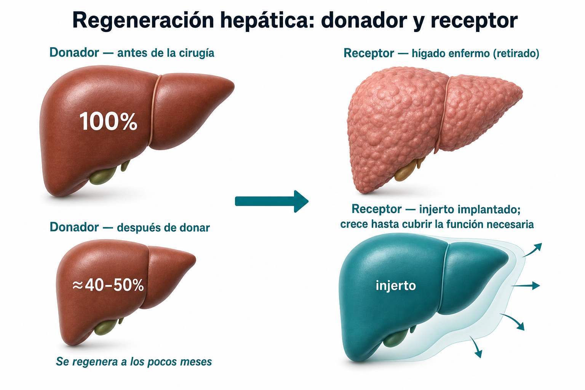
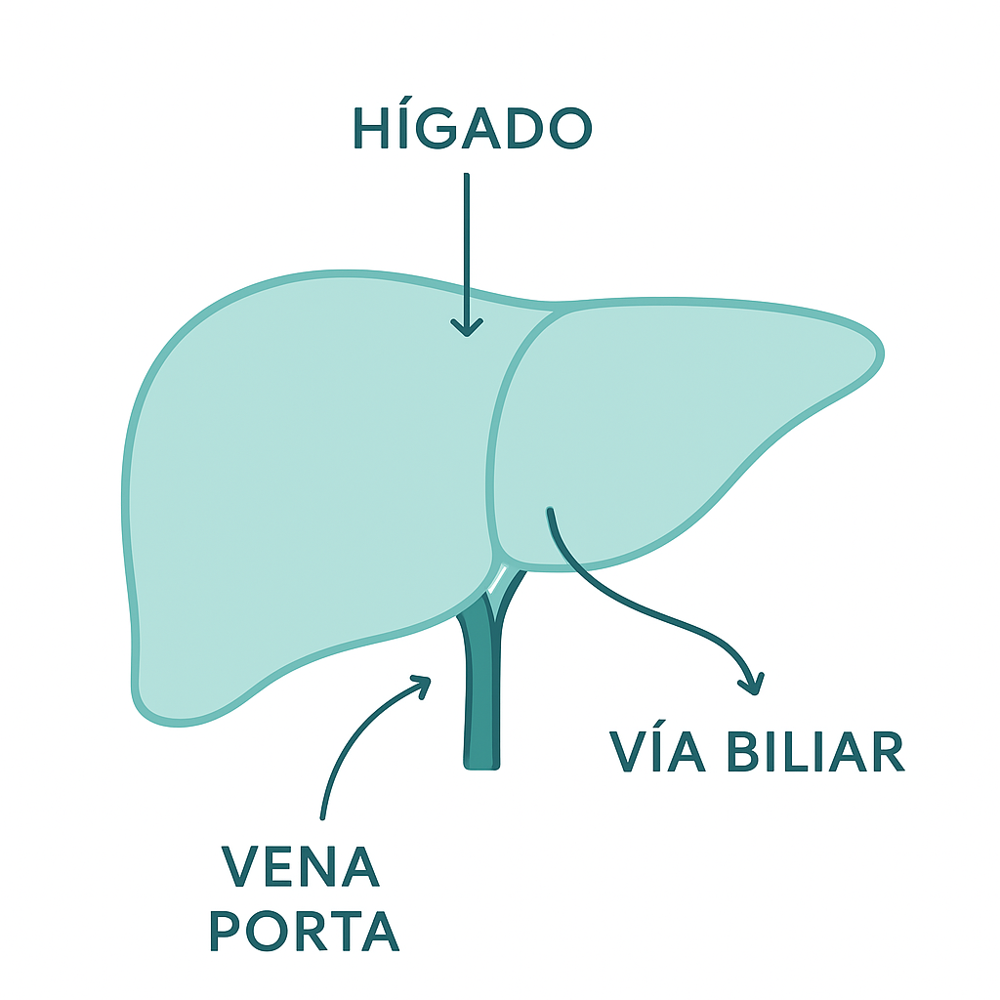
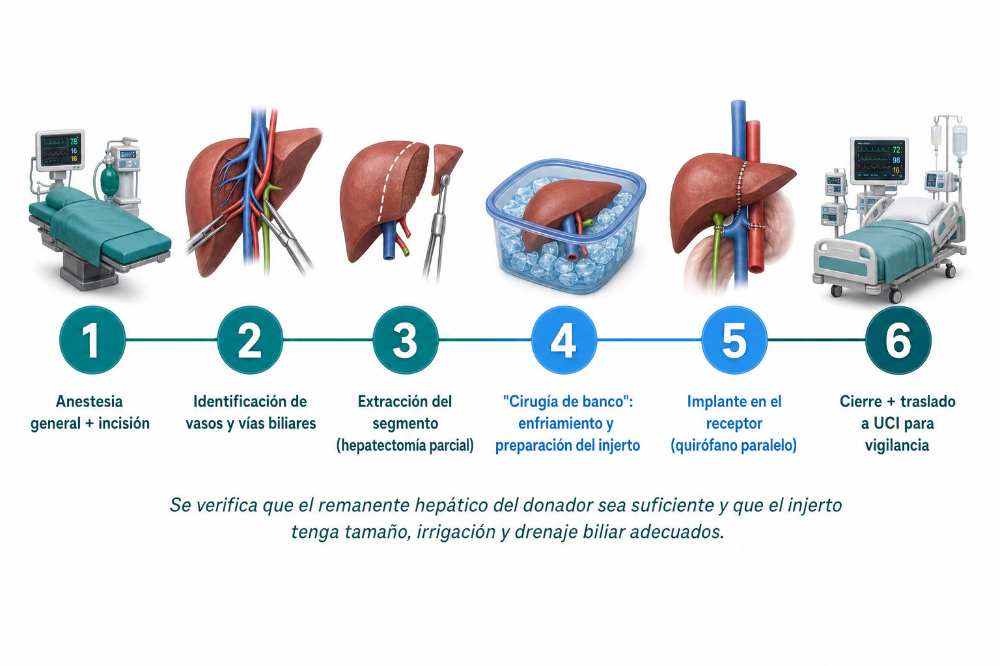
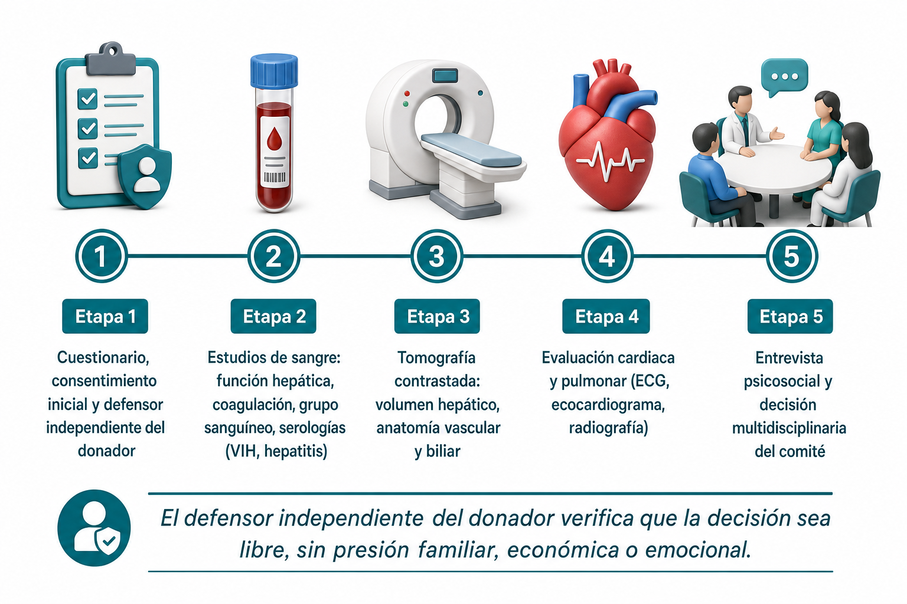
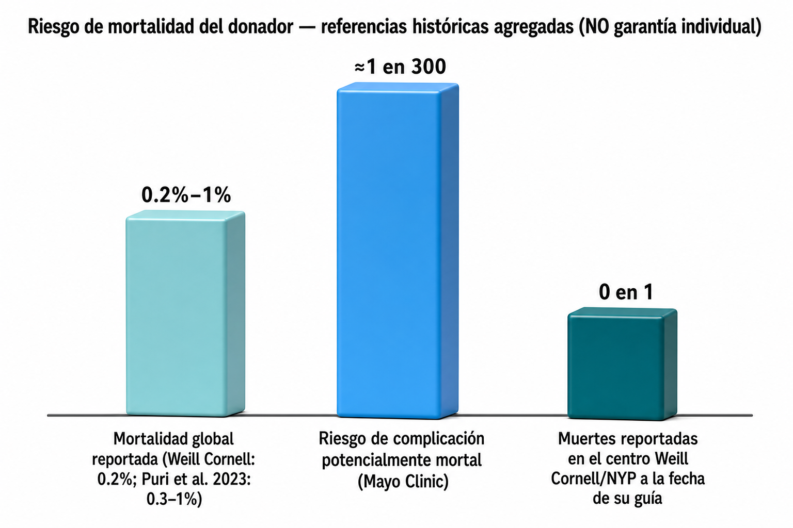

Orientación para familias que buscan conocer el proceso de evaluación de un posible trasplante hepático pediátrico con donador vivo a vivo (DVV), sujeto a valoración médica, criterios de seguridad y decisión del comité de trasplantes.
Este sitio ofrece información general y no sustituye una valoración médica. La posibilidad de realizar un trasplante depende de la evaluación individual del paciente, del donador, de la infraestructura hospitalaria y de la decisión del comité de trasplantes. En una emergencia, llama al 911 o acude a urgencias.
A través de la Fundación Fight for Life Club y la alianza con el Instituto Nacional de Pediatría (INP), el equipo médico participa en la atención de casos filantrópicos conforme a los criterios, procesos y capacidades de dichas instituciones. Esta vía está dirigida a pacientes que cumplen los criterios institucionales correspondientes, particularmente en contextos de vulnerabilidad económica.
El programa de atención privada se encuentra en proceso de definición de sede hospitalaria en la Ciudad de México. La institución sede se confirmará posteriormente. Está dirigido a familias con seguro de gastos médicos mayores aplicable o que cubrirán directamente los servicios. La evaluación, indicación y realización del trasplante están sujetas a criterios médicos, administrativos, regulatorios y a la aprobación del comité de trasplantes.
En un trasplante hepático con donador vivo, se evalúa a una persona adulta que podría donar una parte de su hígado a un niño o niña. El hígado tiene capacidad de regeneración parcial; sin embargo, la donación es una cirugía mayor y requiere una evaluación independiente y exhaustiva de la seguridad del donador.

Fuente: Mayo Clinic — Living-donor transplantation overview; American Liver Foundation, guía del donante (2026). Ilustración esquemática, no representa anatomía exacta.

Ilustración educativa, no fotorrealista — no representa un caso clínico real.
El donador debe entender que se somete a cirugía sin recibir un beneficio médico directo. Puede retirarse en cualquier momento del proceso, de forma confidencial.
Grupo sanguíneo, volumen hepático, anatomía vascular y biliar, y proporción injerto-receptor son evaluados de forma independiente — no basta la compatibilidad sanguínea.
La literatura reporta resultados generalmente favorables en grupos pediátricos seleccionados, pero también complicaciones. La información poblacional no predice el resultado de un caso individual.
Fuente: Johns Hopkins Medicine — Living Donor Liver Surgery; TecSalud (México). Donador y receptor tienen equipos quirúrgicos independientes.

Fuente: Johns Hopkins Medicine (Living Donor Liver Surgery); TecScience/TecSalud, "TecSalud realiza trasplante de hígado de donador vivo" (2023).
Imagen ilustrativa generada por IA de un quirófano moderno — no corresponde a un procedimiento real.
Presión arterial, función hepática, hemoglobina, dolor, herida quirúrgica, posible fuga biliar y función pulmonar se vigilan de cerca en ambos pacientes.
El donador comienza progresivamente a sentarse, caminar y avanzar su dieta — reduce el riesgo de complicaciones pulmonares y trombosis.
La cicatrización interna y la recuperación de energía continúan durante semanas o meses después de salir del hospital.
Fuente: Johns Hopkins Medicine — Evaluation Process; American Liver Foundation; Puri et al. 2023, Journal of Clinical and Experimental Hepatology (PMC10709134).

Fuente: Johns Hopkins Medicine, Evaluation Process for Living Liver Donors.
Imagen ilustrativa generada por IA de una sala de espera hospitalaria — no representa una sede específica.
La ética del trasplante de donador vivo exige que la seguridad del donador sea un fin independiente, no solo un medio para el éxito del receptor.

Estas cifras son poblacionales e históricas de otros centros, no una predicción del resultado individual ni del programa HMG. Solicita siempre las tasas propias del centro y del cirujano.
| Categoría de riesgo | Detalle citado en las fuentes |
|---|---|
| Quirúrgico general | Sangrado, infección, coágulos, neumonía, complicaciones de la herida, reacción a la anestesia (Mayo Clinic, ALF) |
| Biliar | Fuga de bilis, estrechamiento o lesión de vías biliares, puede requerir drenaje o reintervención (Mayo Clinic, ALF) |
| Pared abdominal | Hernia o abombamiento abdominal (Mayo Clinic) |
| Función hepática | Insuficiencia hepática del remanente; en casos excepcionales, necesidad de trasplante para el propio donador (ALF) |
| Psicológico | Ansiedad, culpa si el receptor tiene complicaciones o rechazo, tensión familiar/financiera (Mayo Clinic, ALF) |
| Selección de donador | Razones de rechazo más comunes: renuencia del donador (21%), esteatosis macrovesicular >10% (16%), retiro asistido (14%), volumen remanente inadecuado (13%) — Sharma et al. 2013 |
El compendio del IMSS sobre donación y trasplantes establece requisitos esenciales: mayoría de edad, capacidad mental, información completa de riesgos por un médico distinto al equipo que realizará el trasplante, consentimiento escrito y compatibilidad aceptable.
TecSalud ha reportado supervivencia superior al 88% en sus trasplantes hepáticos de donador vivo — cifra similar a la reportada en Estados Unidos — y describe el mismo proceso de "cirugía de banco" que se documenta internacionalmente.
Según el Registro Nacional de Trasplantes citado por TecScience (enero 2023), 239 personas esperaban un hígado en México, con donadores cadavéricos insuficientes — contexto que hace relevante la vía de donador vivo.
El equipo médico que participa en este programa acumula experiencia en trasplante hepático pediátrico con donador vivo a vivo a través de la Fundación Fight for Life Club, en alianza con el Instituto Nacional de Pediatría (INP), atendiendo casos filantrópicos de bajos recursos.
Imagen simbólica generada por IA — representa el acompañamiento del proceso, no un caso clínico real.
Es una persona adulta, generalmente familiar, que dona voluntariamente una parte de su hígado para trasplantarla a un paciente que lo necesita, tras una evaluación médica, anatómica y psicosocial independiente.
Adultos sanos, sin enfermedad hepática, cardiaca, pulmonar o renal importante, cáncer activo, ciertas infecciones o abuso activo de sustancias. La evaluación final la determina el equipo médico.
No. Es solo uno de varios factores; también se evalúan volumen hepático, anatomía vascular y biliar, y proporción injerto-receptor.
No. La evaluación puede determinar que la donación no es segura para el donador o que el receptor no es candidato en ese momento. La decisión final corresponde al comité de trasplantes.
Varía por caso. No existe un tiempo garantizado para la evaluación, autorización, programación o realización del procedimiento.
Es el mismo equipo médico, pero son vías de atención distintas, con procesos, instituciones y criterios de acceso diferentes.
Depende de la póliza, la aseguradora y el hospital sede. La cobertura no equivale a aprobación médica ni garantiza la realización del trasplante.
La sede hospitalaria privada está en proceso de confirmación. Se comunicará cuando estén formalizados los acuerdos correspondientes.
Ver la sección "Riesgos" arriba, con cifras citadas de fuentes clínicas reconocidas (Mayo Clinic, American Liver Foundation, Weill Cornell, literatura revisada por pares).
No. Esta página ofrece información general. La evaluación real requiere consulta médica presencial y estudios clínicos específicos.
Basado en las guías de Mayo Clinic y American Liver Foundation — llévalas por escrito a tu primera consulta.
Asistente virtual especializado en orientación sobre el programa. No evalúa elegibilidad clínica ni promete disponibilidad de donador, órgano o resultado.
LINA-Trasplantes no diagnostica, no evalúa elegibilidad ni promete disponibilidad de donador u órgano. Emergencias: llama al 911. .
Un coordinador humano te contactará. No se solicita expediente clínico completo en este primer formulario.